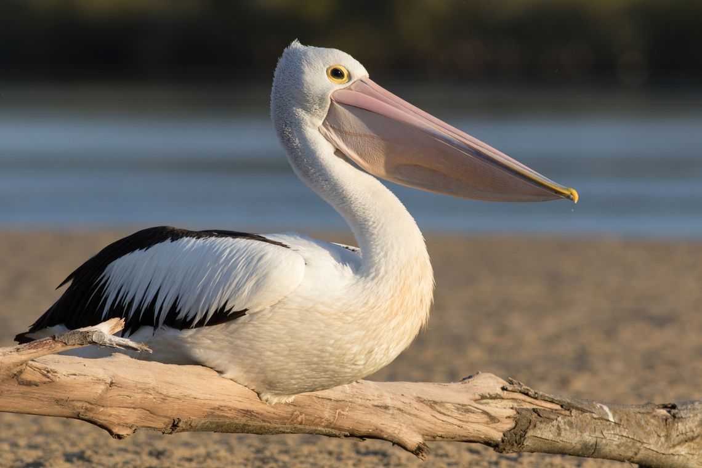

Pelicano

Existen más de media docena de especies de pelícanos conocidos, pero todos tienen la famosa bolsa bajo el pico que caracteriza a estas aves.
La mandíbula superior termina en un fuerte gancho que se curva hacia abajo sobre la punta de la mandíbula inferior. Debajo de ésta hay una bolsa de piel desnuda. La lengua es corta y casi rudimentaria. Tienen la cara y la garganta desnudas, las patas cortas y la cola redondeada.
Los pelícanos están muy distribuidos en la mayor parte de las regiones cálidas y frecuentan las costas, las orillas de los lagos y los ríos. Se alimentan sobre todo de peces.
Volver>